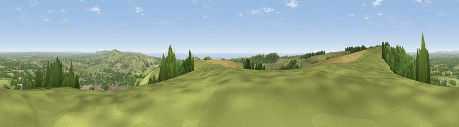

Viewpoint near Steyning
#1237 in England · top 7% of its area beats it · near Steyning · path 88 mWhere it is
The exact computed spot (TQ 15875 10788). Click the marker for map links.
Public access: the nearest public right of way is about 88 m away — the final stretch may cross private land. Computed from Natural England's CRoW access layer and OpenStreetMap rights of way — not the legal definitive map. Always verify locally.
The view, rendered

A 360° render of this exact spot computed from the terrain model, tree cover and land cover — summer colours, afternoon light, calibrated against photographs of famous viewpoints. Real trees, hedges and buildings will differ in detail.
The panorama
Grey silhouette: terrain skyline in each direction (720 bearings, Earth curvature and refraction included). Dashed green: skyline with trees (+15 m) and buildings (+8 m) as obstacles. Blue strip: how far the ground is visible on each bearing.
Where the view opens
Wedge length = distance to the farthest visible ground on that bearing (vegetation-aware). Rings at 10, 25 and 50 km.
What fills the view
53% grassland · 24% woodland · 13% cropland · 5% water · 5% built-up
Angular shares of the visible panorama (visual magnitude), not map area. Landscape diversity 0.54 (0–1 Shannon).
Key numbers
More beautiful places nearby
The staircase of upgrades: each row has a higher view potential than everything closer. Driving times are estimates from straight-line distance, calibrated against real road routing — check an actual route before setting out.
| Place | Direction | Drive | Score |
|---|---|---|---|
| Viewpoint near Steyning | NW · 1 km | ~2 min | 82.6 |
| Chanctonbury Ring | NW · 2 km | ~6 min | 87.0 |
| Firle Beacon | E · 33 km | ~51 min | 88.9 |
| Viewpoint near Niton | WSW · 75 km | ~98 min | 89.2 |
| Viewpoint near West Bexington | W · 162 km | ~184 min | 89.5 |
| The Knoll | W · 164 km | ~185 min | 91.0 |
50.88497, -0.35409 · source: screening · position refined by local search. Computed location — check access rights before visiting.